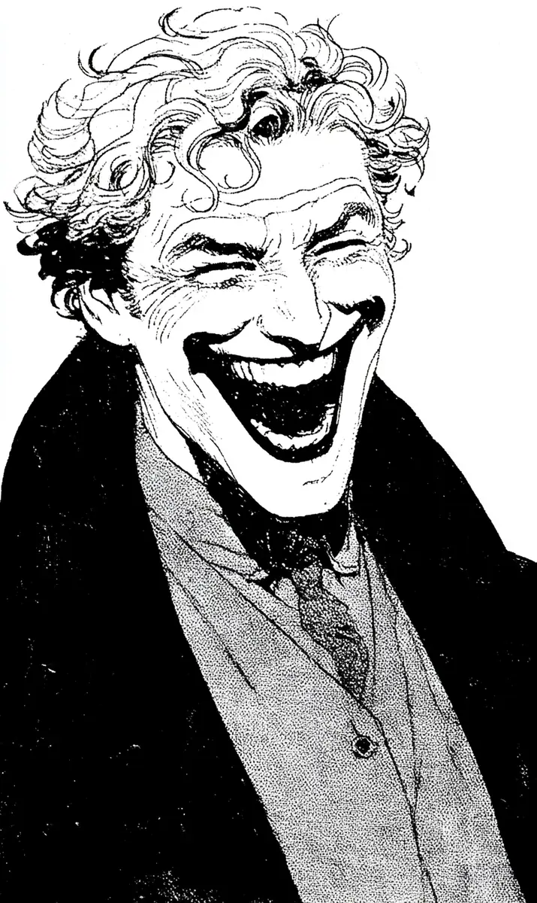

사직서를 부장님 책상 위에 툭 내려놓았다.
[I tossed my resignation letter onto the manager’s desk.]
최 부장님은 안경 너머로 나를 쳐다봤다.
[Manager Choi stared at me over his glasses.]
“지금 장난해?”
[”Are you joking right now?”]
나는 웃었다.
[I smiled.]
십 년 만에 처음으로 진심으로 웃었다.
[For the first time in ten years, I smiled for real.]
“장난 아닙니다. 저 오늘 그만둡니다.”
[”No joke. I’m quitting today.”]
가슴속에서 무거운 돌덩이가 쑥 빠져나가는 기분이었다.
[It felt like a heavy stone slid right out of my chest.]
십 년 동안 나는 이 회사의 그림자처럼 살았다.
[For ten years I lived like a shadow of this company.]
가장 먼저 출근하고 가장 늦게 퇴근했지만 아무도 내 이름을 제대로 부르지 않았다.
[I came in first and left last, but no one ever called my name properly.]
오늘은 달랐다.
[Today was different.]
자리로 돌아가 짐을 챙기기 시작했다.
[I went back to my desk and started packing.]
옆자리 김 과장이 비웃듯이 말했다.
[Kim, the chief at the next desk, said with a sneer:]
“어디 갈 데는 있고?”
[”You got somewhere to go, at least?”]
나는 그를 똑바로 쳐다봤다.
[I looked him dead in the eye.]
“과장님 커피 심부름은 즐거웠습니다. 이제 직접 타 드세요.”
[”Fetching your coffee was a real joy. Make your own from now on.”]
김 과장의 얼굴이 벌겋게 달아올랐다.
[Kim’s face flushed bright red.]
복도에서 늘 나를 무시하던 이 상무님과 마주쳤다.
[In the hallway I ran into Executive Lee, who always looked down on me.]
“넥타이 꼴이 그게 뭐야, 정신머리하고는.”
[”What kind of tie is that? No sense at all.”]
오늘은 그 말이 하나도 아프지 않았다.
[Today those words didn’t sting one bit.]
“상무님, 그 입냄새부터 좀 고치시는 게 어떨까요?”
[”Sir, how about you fix that breath of yours first?”]
상무님의 입이 떡 벌어졌다.
[The executive’s mouth dropped wide open.]
탕비실 앞을 지나다 걸음을 멈췄다.
[I stopped as I passed the office pantry.]
선반 끝에 아슬아슬하게 쌓여 있던 서류 더미가 보였다.
[On the edge of the shelf sat a stack of documents balanced precariously.]
손가락으로 톡 밀었다.
[I gave it a little push with my finger.]
서류가 와르르 바닥으로 쏟아졌다.
[The papers came tumbling down all over the floor.]
부장님 책상 위, 늘 자랑하던 골프 트로피도 슬쩍 건드렸다.
[I gave a light nudge to the golf trophy the manager always bragged about.]
쨍그랑.
[Crash.]
사무실이 쥐 죽은 듯 조용해졌다.
[The office went dead silent.]
모두가 입을 다물고 나를 쳐다봤다.
[Everyone clammed up and stared at me.]
나는 어깨를 쭉 펴고 문을 향해 걸었다.
[I straightened my shoulders and walked toward the door.]
유리문을 밀고 밖으로 나왔다.
[I pushed the glass door open and stepped outside.]
봄 햇빛이 눈부시게 쏟아졌다.
[The spring sunlight poured down, dazzling.]
따뜻한 바람이 셔츠 사이로 파고들었다.
[A warm breeze slipped in through my shirt.]
평생 이렇게 행복한 적이 없었다.
[I had never been this happy in my entire life.]
넥타이를 풀어 길가 쓰레기통에 던져 넣었다.
[I pulled off my tie and tossed it into a trash can by the road.]
휘파람을 불며 천천히 걸었다.
[I strolled off slowly, whistling.]
뒤는 한 번도 돌아보지 않았다.
[I didn’t look back, not even once.]